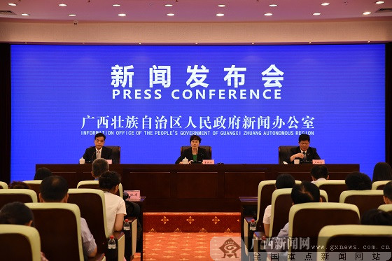

最新通告
-

全区文化工作推进座谈会暨文化扶贫工作现场会在梧州市召开。自治区文化厅党组书记、厅长张虹在会上作了讲话，梧州市委书记全桂寿出席会议并致辞。
-

广西壮族自治区出台80条措施促进桂台经济文化交流合作，为吸引台资企业，引进台湾先进农业生产经营经验助力精准脱贫，以及广西海峡两岸产业合作区推进与运行
-

由亚太旅游联合会、自治区旅游发展委等共同主办，以“向海之路，海丝文化与海洋旅游”为主题的2018海上丝绸之路（北海）旅游产业发展投资大会在北海举行。
2019年度国家艺术基金艺术人才培养资助项目解读
一、国家艺术基金为什么设立艺术人才培养资助项目？
学习贯彻落实党的十九大关于“加强队伍建设，造就一大批德艺双馨名家大师”的要求，贯彻落实习近平总书记关于文艺工作系列重要讲话精神，艺术基金从我国艺术人才队伍建设的实际情况出发，以提高艺术素养、提升专业能力为目标，设计了艺术人才培养项目，引导、鼓励、支持艺术单位和机构提高培训质量，培养高素质专业人才，繁荣社会主义文艺，推动艺术事业创新发展。
二、艺术人才培养资助项目的资助范围是什么？
艺术人才培养项目的资助范围包括：舞台艺术、美术、书法、摄影、工艺美术和网络文艺（网络演出、网络音乐）等领域的艺术专业人才、经营管理人才和理论评论人才，基本覆盖当前艺术活动的主要领域，对艺术作品的创作生产、市场经营和评价推介等环节都有涉及。
三、艺术人才培养资助项目的资助重点是什么？
以习近平新时代中国特色社会主义思想为行动指南，贯彻落实党的十九大精神，本年度重点资助围绕纪念改革开放40周年、庆祝中华人民共和国成立70周年、全面建成小康社会和庆祝中国共产党成立100周年等重要时间节点开展的创作人才培养项目......
广西壮族自治区民族民间传统文化保护条例
(《广西壮族自治区民族民间传统文化保护条例》已由广西壮族自治区第十届人民代表大会常务委员会第十三次会议于2005年4月1日通过，现予公布，自2006年1月1日起施行。)
第一章 总 则
第一条 为了保护、继承和弘扬民族民间优秀传统文化，推动经济和社会发展，促进社会主义物质文明和精神文明建设，根据有关法律、法规，结合本自治区实际，制定本条例。
第二条 在自治区行政区域内，下列具有历史、文学、艺术、科学、社会价值的民族民间传统文化受本条例保护：
(一)濒危的民族古文字和语言；
(二)记录民族民间传统文化的文献资料；
(三)具有代表性的文学、戏剧、曲艺、音乐、舞蹈等民族民间口头和非物质文化；
(四)具有特色的传统民俗文化活动和体育活动；
(五)民族民间传统生产、制作工艺和其他技艺；
(六)集中反映民族民间传统文化的代表性建筑、设施、标识、服饰、器物、工艺制品；
(七)集中反映民族民间传统文化并保存比较完整的自然场所；
(八)其他需要保护的民族民间传统文化形式
......
【详情】